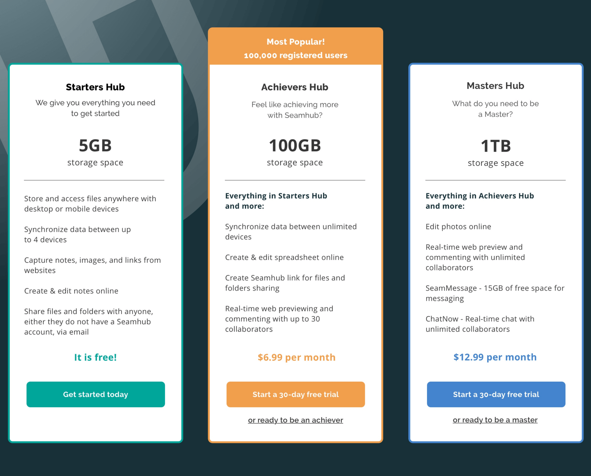
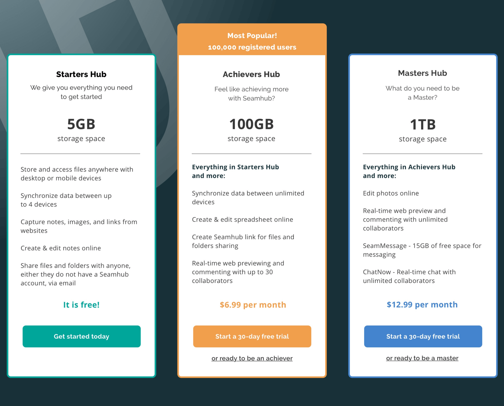

Mind-mapping and word association
Stability and security play a big part in the world of cloud storage and organization service, therefore, when it comes to branding, the first thing crossed my mind were trustworthiness and professionalism. Meanwhile, as more and more users are bringing these applications to their personal and social lives, I decided the brand should also be lifestyle-friendly and energetic. These concepts shaped the tone and voice of my brand.
I went on mind-mapping and playing around different word combinations based on the concepts of easy, secure, unified and modern. While I came across with different compositions, I decided to lock down Seamhub as the brand name.
Take a look at my mind map
With the brand identity getting in shape, I began to sketch out different variations of objects that I found relevant to the brand. The concepts of a puzzle, gear wheel, lightbulb, rooftop, and pocket have initially reached my mind. I was eventually attracted by the simplicity of logotypes and tried out twisting the brand initials (S & H), to meet the goal of creating a clean, modern and memorable logo.
 
